防具は S2 祭 (布の輪郭に、要所だけの面取りした板・重ねた縁・宝石・細い光の線) に決まりました。ここでは武器をどこまで細かくするかを 3 段階で見比べます。どの段階でも量塊 (厚いブロック) の言葉は使わず、武器の名前と輪郭は今のまま、閉じた立体 (中が見えない) です。
代表 6 本 (大剣・槍・弓・短剣・斧・盾) を 4 巨神にまたがって選びました。レアの見た目で、防具 S2 のレアを着たマネキンに持たせた姿も付けています。ゲームには入れていません (ラフです)。画像はドット絵の拡大のため少しにじみます。
| 段階 | やること | 見た目の変化 |
|---|---|---|
| D1 今のまま | 手を入れない。基準。 | 今ゲームに入っている武器そのもの。防具 S2 と並べると、武器だけ飾りが少なく見えます。 |
| D2 整え | 輪郭は同じ。大きな箱の角を面取り (角を斜めに落とす) し、柄や鍔に金属の細い環、宝石を 1 つ、光る細い線を 1 本足す。 | 防具の「面取りした板・重ねた縁・宝石・細い光の線」と同じ言葉になります。遠目の形は変わらず、近づくと整って見えます。 |
| D3 細密 | D2 に加えて、浮き彫りの山形の模様、巻いた柄、重ねた鍔、巨神の副モチーフ (牙・珊瑚・羽・鉄板・真珠) を足す。 | 祭具らしい密度になります。そのぶん三角形が増え、小さく持つと細かい飾りは潰れて見えやすい。輪郭は読めるまま。 |
| 三角形の数 (レア) | D1 今のまま | D2 整え | D3 細密 |
|---|---|---|---|
| 鯨骨の大剣 (大剣) | 272 | 372 (+37%) | 516 (+90%) |
| 潮殻の三叉槍 (槍) | 273 | 335 (+23%) | 467 (+71%) |
| 雷翼の弓 (弓) | 264 | 364 (+38%) | 484 (+83%) |
| 水路の牙 (短剣) | 226 | 338 (+50%) | 452 (+100%) |
| 余燼の戦斧 (斧) | 266 | 350 (+32%) | 492 (+85%) |
| 珊瑚の盾 (盾) | 299 | 389 (+30%) | 523 (+75%) |
| 6 本の合計 | 1600 | 2148 (+34%) | 2934 (+83%) |
おすすめ: D2 整え。防具 S2 とそろい、軽さも保てます (1 本あたり +23〜50%)。D3 は倍近くまで増える武器があり、手に持つと細部が見えにくいので、「伝説階級だけ D3」のように使い分けるのが良さそうです。好みで D3 を選んでも構いません。
左から 鯨骨の大剣・潮殻の三叉槍・雷翼の弓・水路の牙・余燼の戦斧・珊瑚の盾。
今ゲームに入っている形と同じ。基準です。 6 本の合計 1600 面。
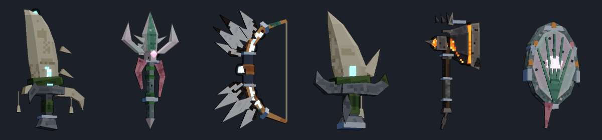
輪郭は同じまま、角を面取りし、柄・鍔に金属の環、宝石、光る細い線を 1 本足す。 6 本の合計 2148 面。
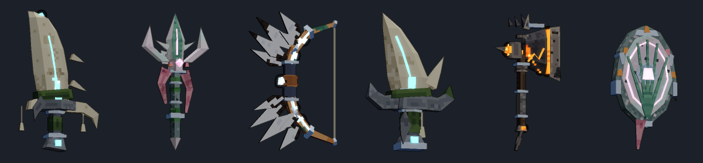
D2 に加えて、浮き彫りの山形・巻いた柄・重ねた鍔・その巨神の副モチーフ (牙・珊瑚・羽・鉄板) を足す。 6 本の合計 2934 面。
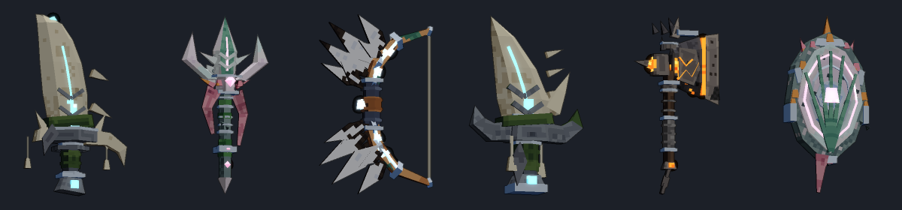
好みが武器ごとに違う場合は、ここで 1 本ずつ選んでください (全体の選択とは別に保存されます)。
白い鯨の骨と青灰の石。鍔の円盤・刃の根・柄に飾りが足されます。 三角形: D1 272 / D2 372 / D3 516。
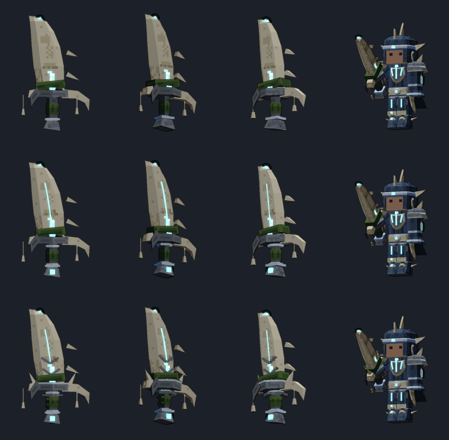
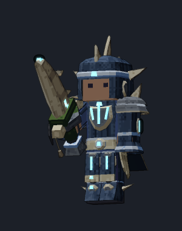
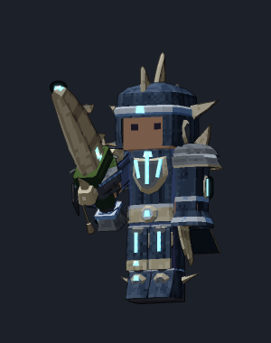
真珠層の穂と薔薇色の帯。柄の環・穂の山形・真珠が足されます。 三角形: D1 273 / D2 335 / D3 467。
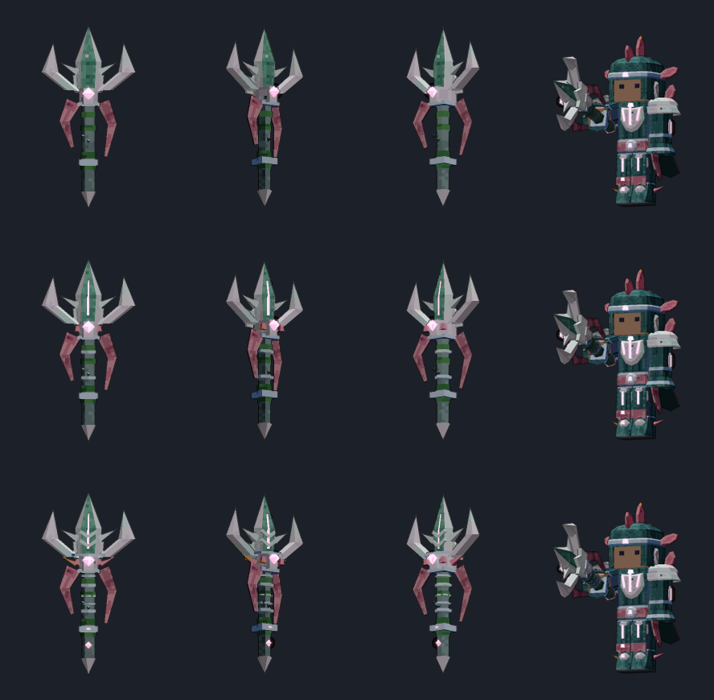
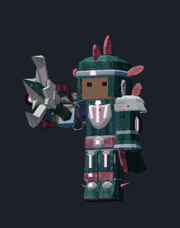
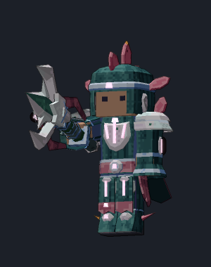
銅の肢と風切羽。肢の環・光の筋・握りの巻きが足されます。 三角形: D1 264 / D2 364 / D3 484。
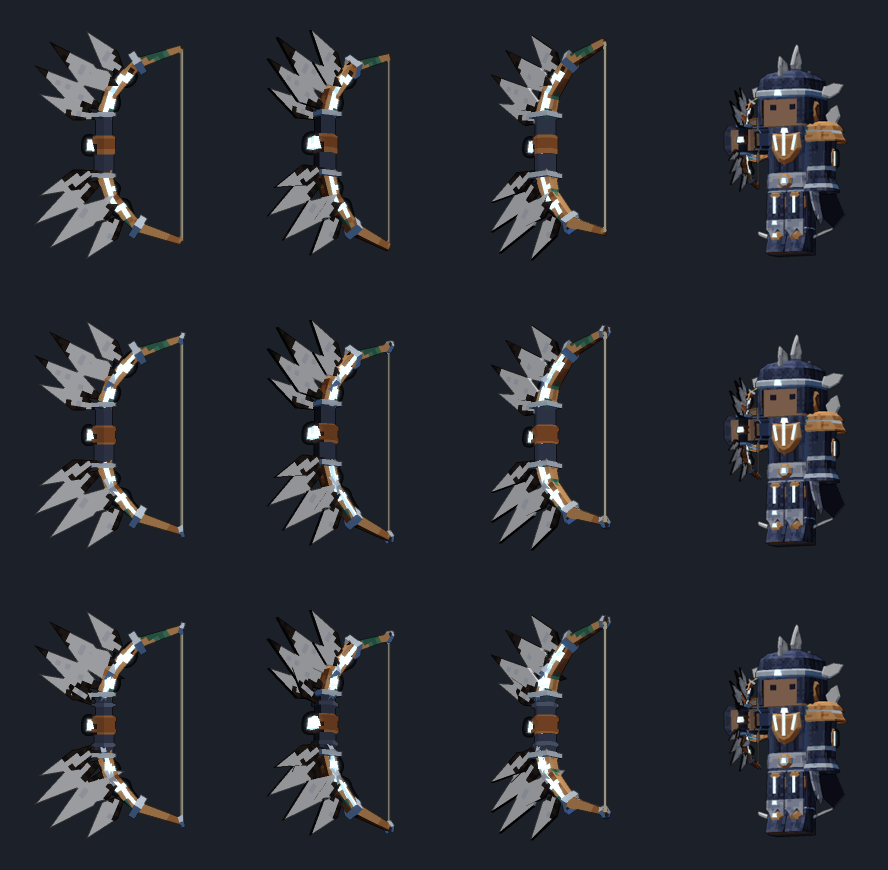
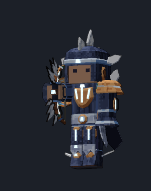
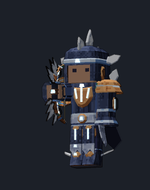
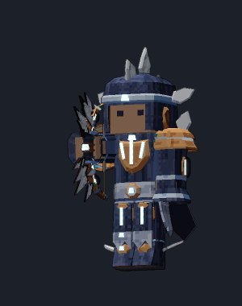
反った 1 本の牙。刃の光の筋・柄の巻き・背の副牙が足されます。 三角形: D1 226 / D2 338 / D3 452。
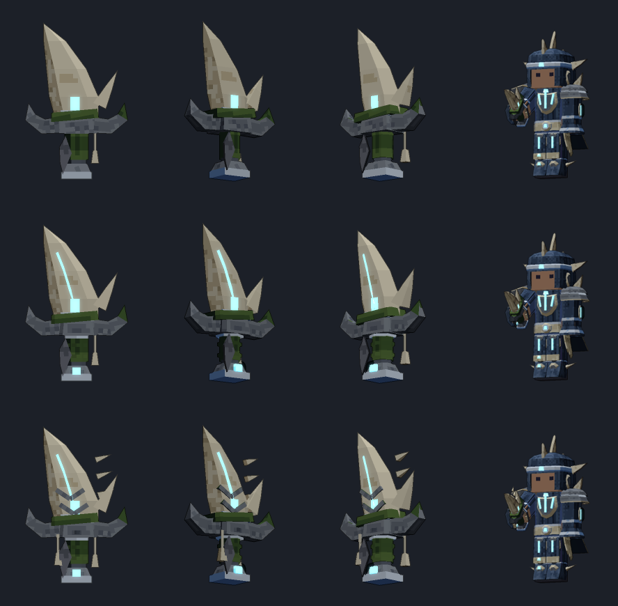
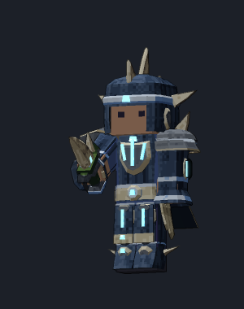
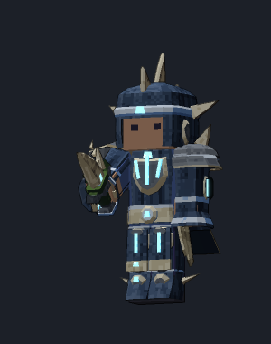
割れた玄武岩の頭と鉄の帯。頭の割れ目の光・鉄板の飾りが足されます。 三角形: D1 266 / D2 350 / D3 492。
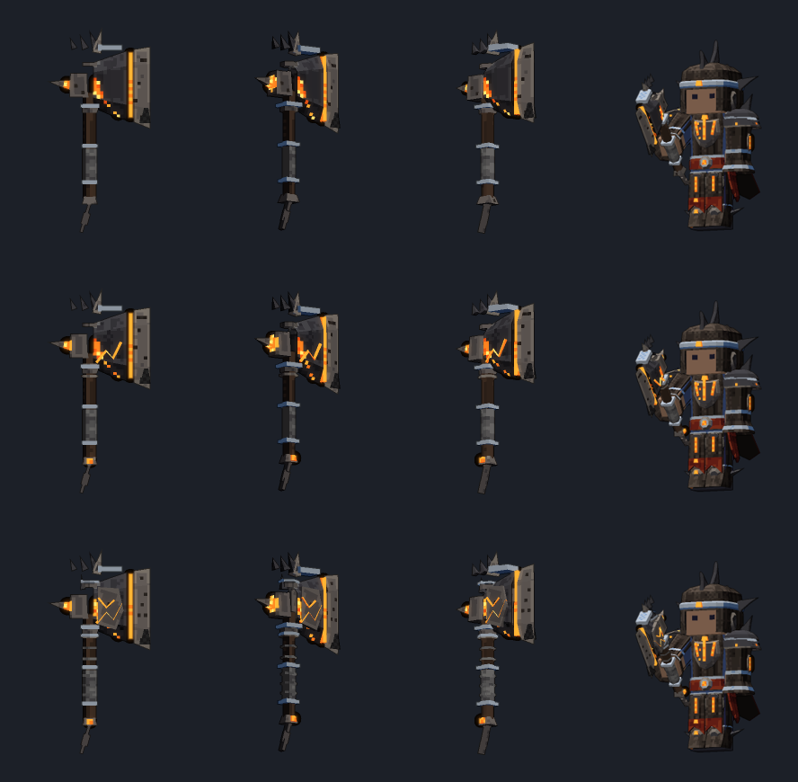
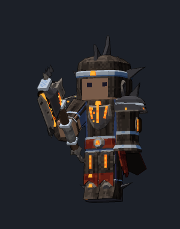
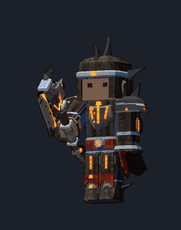
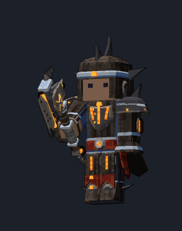
帆立の貝殻の盾。縁の光の輪・中央の金具・珊瑚の鋲が足されます。 三角形: D1 299 / D2 389 / D3 523。
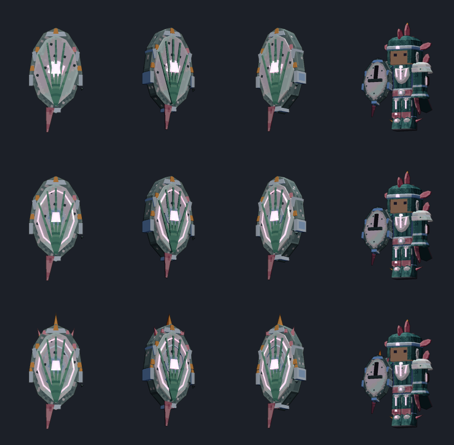
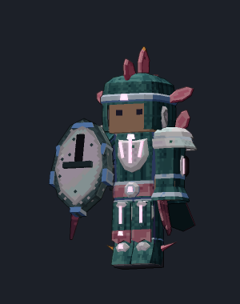
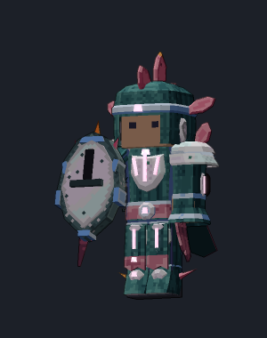
防具 S2 祭: armor_series。作り方: tools/rough/lowpoly/weapons/wdetail.py (D2/D3 は今の item_*.py の形に、面取りと追加部品を足して作っています)。